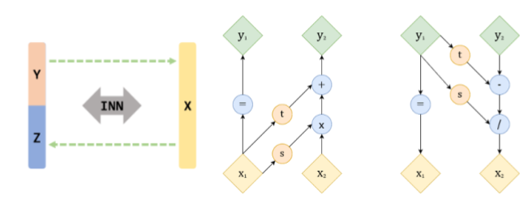

Inverse Kinematics is one of the most crucial problems in robotics, needed to map configuration space to joint space to facilitate smooth motion while performing any task. Owing to the kinematic redundancy and non-linearities in the continuum robots, Inverse Kinematics is relatively challenging. In this paper, we present a static model based on cosserat rod theory and string theory to represent a tendon driven continuum robot. We propose an invertible neural network to represent inverse kinematics. Using 20,000 established training data, INN reaches an R2 score of 0.92 and RMSE of 0.0058 mm. The INN model is then validated using a virtual path planning problem and results show a mean relative error of 2%. The INN model also outperforms a variety of learning algorithms.
 Invertible Neural Network consisting of coupling layers
If you find this project is useful, you may cite it as:
@inproceedings{garg2022inverse,
title={Inverse Kinematics of Tendon Driven Continuum Robots Using Invertible Neural Network},
author={Garg, Shaswat and Dudeja, Satwik and Rastogi, Vikas},
booktitle={2022 2nd International Conference on Computers and Automation (CompAuto)},
pages={82--86},
year={2022},
organization={IEEE}}